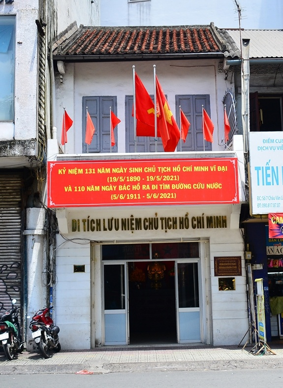
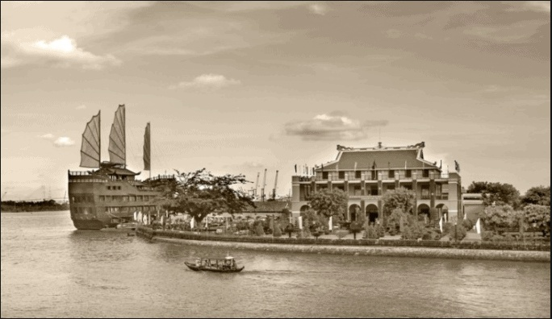
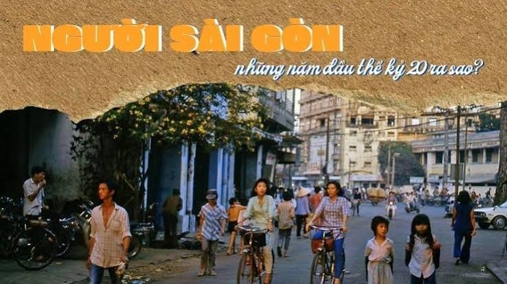
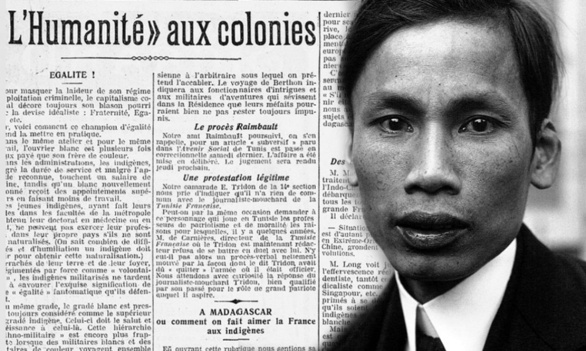
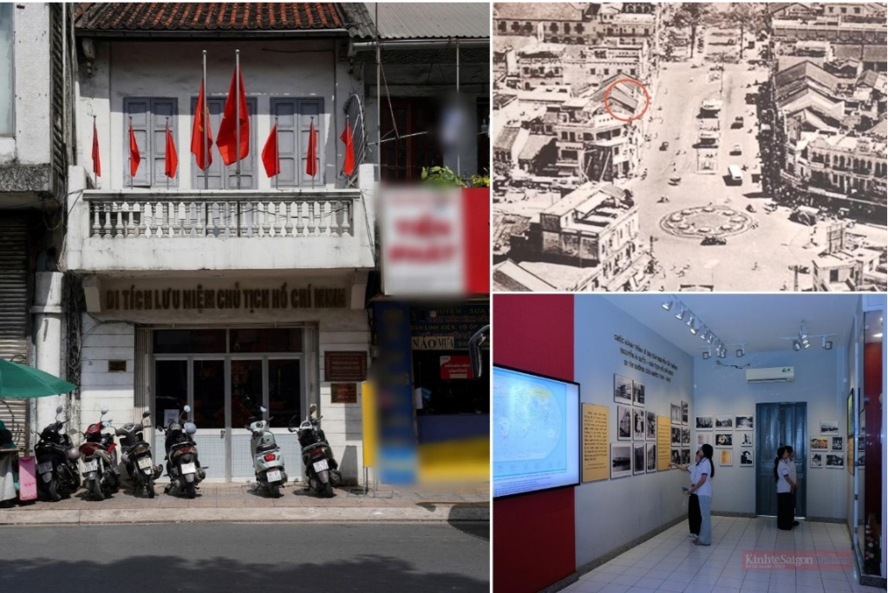
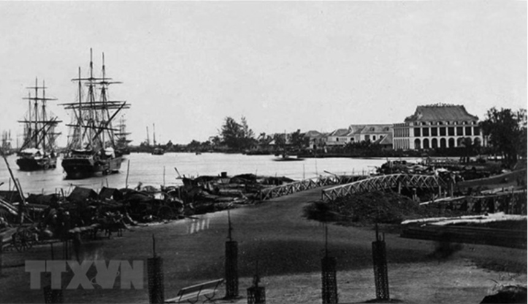
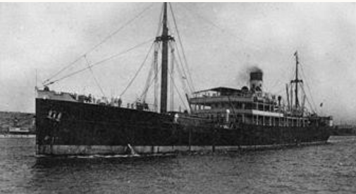
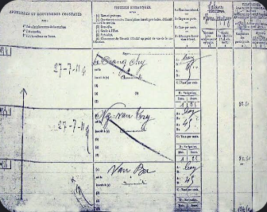
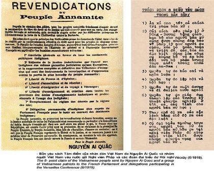
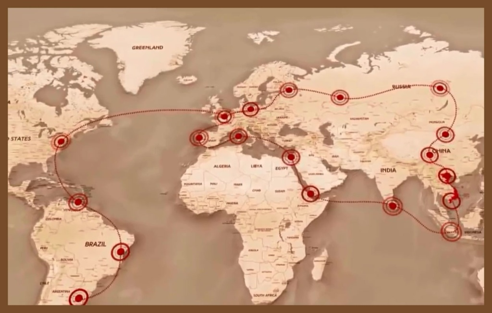

Từ dấu chân lịch sử đến hành trình tìm đường cứu nước (1910 - 1911)
Bắt đầu tham quanTên triển lãm: Nguyễn Ái Quốc ở Sài Gòn: Từ dấu chân lịch sử đến hành trình tìm đường cứu nước
Thông điệp: Sài Gòn là nơi ghi dấu một bước ngoặt quan trọng trong cuộc đời hoạt động của Nguyễn Tất Thành, người sau này được biết đến rộng rãi với tên gọi Nguyễn Ái Quốc và Chủ tịch Hồ Chí Minh. Tại đây, Người tìm hiểu đời sống xã hội, tiếp xúc với thực tế của người lao động và chuẩn bị cho chuyến đi ra nước ngoài ngày 5/6/1911.

Địa điểm: Nhà số 5 Châu Văn Liêm, TP.HCM
Nội dung trưng bày
Trước khi ra đi tìm đường cứu nước, Nguyễn Tất Thành đã sống tại cơ sở của Liên Thành thương quán ở khu Chợ Lớn. Theo tư liệu của Bảo tàng Lịch sử TP.HCM, địa điểm này gắn với thời gian Người ở Sài Gòn từ năm 1910 đến ngày 4/6/1911.
Trong thời gian đó, Người tìm hiểu đời sống của các tầng lớp lao động, quan sát hoạt động tại thương cảng và tìm cơ hội làm việc trên tàu biển để ra nước ngoài.
Ngôi nhà số 5 Châu Văn Liêm ngày nay là một địa chỉ di tích quan trọng, giúp người xem hình dung chặng đường chuẩn bị trước chuyến đi lịch sử năm 1911.

Nội dung trưng bày
Ngày 5/6/1911, người thanh niên yêu nước Nguyễn Tất Thành, khi ấy sử dụng tên Văn Ba, rời Bến Nhà Rồng trên con tàu Amiral Latouche-Tréville để sang Pháp. Đây là dấu mốc mở đầu hành trình nhiều năm tìm hiểu thế giới, nghiên cứu các con đường giải phóng dân tộc và tìm kiếm hướng đi cho cách mạng Việt Nam.
Quyết định ra đi thể hiện khát vọng tìm hiểu những điều mới mẻ từ bên ngoài, đồng thời tìm lời giải cho câu hỏi làm thế nào để đất nước thoát khỏi ách thống trị thực dân.

Nội dung trưng bày
Đầu thế kỷ XX, Việt Nam nằm dưới ách thống trị của thực dân Pháp. Nhiều phong trào yêu nước đã diễn ra, nhưng chưa giành được thắng lợi. Trong bối cảnh đó, Nguyễn Tất Thành sớm hình thành mong muốn tìm một con đường mới để giải phóng dân tộc.
Sài Gòn khi ấy là một trung tâm thương mại và cảng biển quan trọng ở Nam Kỳ, có các tuyến tàu biển kết nối với Pháp và nhiều khu vực khác. Môi trường đô thị và hoạt động giao thương tạo điều kiện để Nguyễn Tất Thành quan sát xã hội, tiếp xúc với đời sống người lao động và tìm cơ hội xuất dương.

Nội dung trưng bày
Chuyến đi năm 1911 mở đầu một hành trình hoạt động kéo dài khoảng 30 năm ở nước ngoài. Trong những năm tiếp theo, Nguyễn Tất Thành lao động, học hỏi, tiếp xúc với phong trào công nhân và phong trào đấu tranh của các dân tộc thuộc địa.
Năm 1919, với tên Nguyễn Ái Quốc, Người thay mặt Hội những người Việt Nam yêu nước tại Pháp gửi bản Yêu sách của nhân dân An Nam tới Hội nghị Hòa bình Versailles, đề nghị những quyền tự do và dân chủ cơ bản cho người Việt Nam. Đến năm 1920, Người tiếp tục nghiên cứu con đường cách mạng vô sản.
Khu trưng bày này giúp người xem hiểu rằng chuyến đi từ Sài Gòn không phải một sự kiện biệt lập, mà là điểm khởi đầu của quá trình tìm kiếm con đường giải phóng dân tộc.
Từ Phan Thiết vào Sài Gòn
Nguyễn Tất Thành rời Trường Dục Thanh và tiếp tục hành trình vào Sài Gòn.
Thời gian ở Sài Gòn
Người ở tại cơ sở Liên Thành thương quán, tìm hiểu đời sống người lao động và chuẩn bị ra nước ngoài.
Rời Bến Nhà Rồng
Nguyễn Tất Thành lấy tên Văn Ba, đi trên tàu Amiral Latouche-Tréville, bắt đầu hành trình tìm đường cứu nước.
Tên Nguyễn Ái Quốc xuất hiện trên diễn đàn quốc tế
Người gửi Yêu sách của nhân dân An Nam tới Hội nghị Versailles.
Xác định con đường cách mạng
Nguyễn Ái Quốc tiếp cận và lựa chọn con đường cách mạng vô sản, mở ra bước phát triển mới trong quá trình tìm đường giải phóng dân tộc.
Dưới đây là các tài liệu và hiện vật lưu trữ quý giá. Bấm vào từng hình ảnh để xem chi tiết tư liệu gốc tại trang nguồn.

Giới thiệu nơi Nguyễn Tất Thành từng ở tại Sài Gòn.

Xác định địa điểm gắn với sự kiện ngày 5/6/1911.

Giúp người xem hình dung phương tiện gắn với chuyến đi lịch sử.

Minh họa tư liệu về việc làm trên tàu.

Thể hiện bước phát triển trong hoạt động chính trị của Nguyễn Ái Quốc.

Kết nối sự kiện ở Sài Gòn với quá trình hoạt động quốc tế.
Sài Gòn lưu giữ những dấu mốc quan trọng trong hành trình của người thanh niên yêu nước Nguyễn Tất Thành. Từ ngôi nhà ở Chợ Lớn đến Bến Nhà Rồng, mỗi địa điểm gắn với một phần câu chuyện về quá trình chuẩn bị và quyết định ra đi tìm đường cứu nước.
Ngày 5/6/1911 không chỉ đánh dấu một chuyến đi bằng đường biển, mà còn mở đầu cho hành trình tìm kiếm con đường giải phóng dân tộc kéo dài nhiều năm. Nhìn lại những dấu mốc ấy, người xem có thể hiểu rõ hơn bối cảnh lịch sử, ý nghĩa của sự lựa chọn và mối liên hệ giữa những địa điểm lịch sử của Sài Gòn với tiến trình cách mạng Việt Nam.